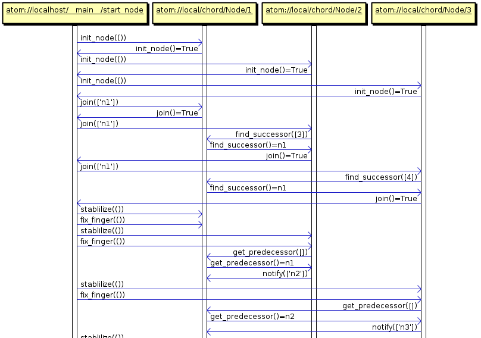

A complex issue in our platform is how to debug distributed code involving complex one-to-one and one-to-many abstractions among Actors. One of the major drawbacks of the Actor model is the complexity of debugging the code. But it is also true that debugging distributed applications that communicate using asynchronous messages and callbacks are notoriously hard to debug and follow. Our approach here is to offer good event tracing capacities for Actors. Hence, we offer a log system that allows register all the generated events through the actors.
To achieve this log system, PyActive only needs to intercept all the messages between actors. Although, we need an actor that receives all the intercepted messages, where the developer can handle this information (e.g. save the intercepted messages in a file, print the messages through standard output).
As seen in other sections of this guide, we can bind new actors using spawn_id function. Therefore, to register the log actor, we need to do the same as all the actors, but in this case we need to provide to this actor with all the intercepted messages. Then, we going to explain how to do that.
Firstly, we need to create a new object, which have to have a method called notify. This method must be asynchronous and receive one parameter which will be an intercepted message. Once we have the object with this asynchronous method, the object will be ready to join in the host as an actor. At this point, we have an actor running with an asynchronous method named notify. Now is the moment to tell to PyActive, that this actor will be a log actor who will handle the intercepted messages.So, to indicate to PyActive who is the actor that will act as a log actor, we need to call the set_trace function which receives as a parameter the reference of the actor which has the log task assigned. Once we have called the set_trace function, the log system starts, so the log Actor starts to receive messages through the notify method.
We decided this system methodology because the developer can choose what to do with the messages (save, show, filter...). In this section we show two different examples about how to use this system: (1) a simple Log which only prints the messages it received, (2) we provide an UML logger that generates sequence diagrams from interactions among Actors.
Example 1: Simple Log
This example shows a simple log actor that we can make.
class Log():
_sync = {}
_async = ['notify']
_ref = []
_parallel = []
def notify(self, msg):
#print all messages that it receives.
print 'log system:', msgThe code above shows you a simple log actor, that implements the notify method, and prints the msg through the standard output.
In the code bellow we show you a full example, with a Server class and the Log class that we showed above.
class Server():
_sync = {'add': '1'}
_async = ['substract']
_ref = []
_parallel = []
def add(self,x,y):
return x+y
def substract(self,x,y):
print 'substract',x-y
#This method initialize the test.
#Registry Log class. Call set_trace method.
def test_log():
host = init_host()
log = host.spawn_id('log', 'log','Log',[])
host.set_tracer(log)
ref = host.spawn_id('1','log','Server',[])
ref.substract(6,5)
print ref.add(5,5)
sleep(1)Example 2. UML Log
We provide an UML logger that generates sequence diagrams from interactions among Actors. You can view above the code of log class that it generate a specific output document:
class LogUML():
_sync = {}
_async = ['notify', 'to_uml']
_ref = []
_parallel = []
def __init__(self):
self.events = []
self.nameNodes = {}
self.cnt2 = 0
self.cont = 0
self.nodes = {}
self.titles = {}
self.list_nodes = []
def notify(self,msg):
self.events.append(msg.copy())
def to_uml(self, filename):
uml = []
uml_names = []
uml.append('\n')
for msg in self.events:
fromref = urlparse(msg[FROM])
toref = urlparse(msg[TO])
if not self.nodes.has_key(fromref.path):
self.list_nodes.append(fromref.path)
self.nodes[fromref.path] = fromref.path
if not self.nodes.has_key(toref.path):
self.list_nodes.append(toref.path)
self.nodes[toref.path] = toref.path
self.titles[fromref.path] = msg[FROM]
self.titles[toref.path] = msg[TO]
while(self.cnt2 < len(self.list_nodes)):
evt = 'n'+str(self.cnt2)+':Process[p] "'+self.titles[self.list_nodes[self.cnt2]]+'"\n'
self.nameNodes[self.titles[self.list_nodes[self.cnt2]]] = "n"+str(self.cnt2)
uml_names.append(evt)
self.cnt2 += 1
uml.append('\n')
for msg in self.events:
if msg[TYPE]==CALL:
fromref = urlparse(msg[FROM])
toref = urlparse(msg[TO])
nfrom = 'n'+str(self.list_nodes.index(fromref.path))
nto = 'n'+str(self.list_nodes.index(toref.path))
if isinstance(msg[PARAMS], list):
params = []
for node in msg[PARAMS]:
if isinstance(node, Ref):
params.append(self.nameNodes.get(str(node.get_aref())))
else:
params.append(node)
evt = nfrom+':'+nto+'.'+msg[METHOD]+'('+str(params)+')\n'
else:
evt = nfrom+':'+nto+'.'+msg[METHOD]+'('+str(msg[PARAMS])+')\n'
else:
fromref = urlparse(msg[FROM])
toref = urlparse(msg[TO])
nfrom = 'n'+str(self.list_nodes.index(fromref.path))
nto = 'n'+str(self.list_nodes.index(toref.path))
if isinstance(msg[RESULT], list):
result = []
for node in msg[RESULT]:
result.append(self.nameNodes.get(str(node.get_aref())))
evt = nfrom+':'+nto+'.'+msg[METHOD]+'()='+str(result)+'\n'
elif isinstance(msg[RESULT], Ref):
evt = nfrom+':'+nto+'.'+msg[METHOD]+'()='+self.nameNodes.get(str(msg[RESULT].get_aref()))+'\n'
else:
evt = nfrom+':'+nto+'.'+msg[METHOD]+'()='+str(msg[RESULT])+'\n'
try:
uml.append(evt)
except:
None
self.events = []
# (!) save name
write_uml(filename+'_names.sdx', uml_names)
# (2) save interactions among actors
write_uml(filename+'.sdx', uml)
def write_uml(filename, events):
f3 = open(filename, 'a')
f3.writelines(events)
f3.close()